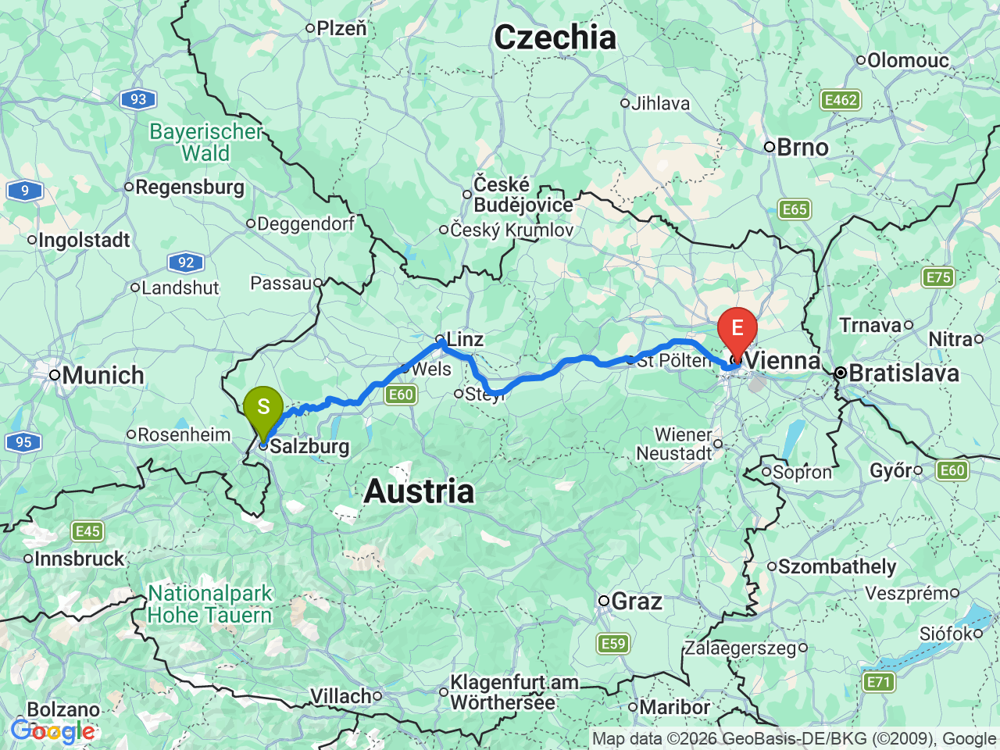
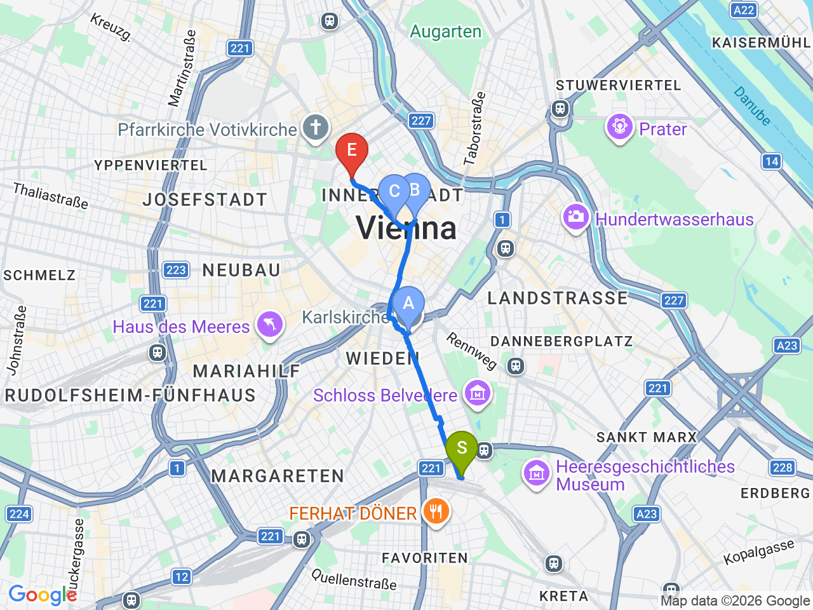

Day 33 · 2026-09-17（四）
奧地利・薩爾茲堡/德國國王湖/維也納 Day 5/9
薩爾茲堡賦歸 → 前往維也納
退房後搭直達火車跨越奧地利，下午輕鬆逛卡爾教堂與舊城初體驗，晚餐傳統咖啡館
薩爾茲堡→維也納

維也納初探（飯店→卡爾教堂→舊城）

固定時間行程DAY 33
| 時間 | 地點 | 地點 (英文) | 交通方式／班次 | 價格 | 預計停留(分鐘) | 備註 |
|---|---|---|---|---|---|---|
| 09:15 | 飯店退房，前往薩爾茲堡中央車站 | 步行約10分鐘 | 提前出發，抓09:30前抵達車站 | |||
| 10:00 | 搭 ICE 1211 直達維也納 | ICE約2小時47分鐘 | 已訂票：Wg.31，座位21/22，二等艙（DB營運的ICE，非ÖBB Railjet） | |||
| 12:47 | 抵達 Wien Hauptbahnhof，飯店 check-in | 1ibis Wien Hauptbahnhof, Canettistraße 8, Vienna | 步行約2分鐘 | 飯店就在車站正對面 |
彈性探索景點DAY 33
| 地點 | 地點 (英文) | 預計停留(分鐘) | 價格 | 備註 |
|---|---|---|---|---|
| 卡爾教堂 | AKarlskirche, Vienna | 約20分鐘 | 外觀（免費） | 巴洛克圓頂教堂，離飯店最近的地標，先在外面走走熟悉環境即可 |
| 史蒂芬大教堂（初探） | BDomkirche St. Stephan, Vienna | 約15分鐘 | 免費（外觀） | 今天只是先看一眼、拍照，深入參觀留到 Day36 |
| Graben（初探） | CGraben, Vienna | 約20分鐘 | 免費 | 舊城核心步行街，晚餐前隨意逛逛 |
| 晚餐：Café Diglas im Schottenstift | DCafé Diglas im Schottenstift, Schottengasse 2, Vienna | 約60-90分鐘 | 見上方三餐資訊 | 修道院中庭裡的老咖啡館；備案見上方三餐資訊（Naschmarkt／GRND Restaurant） |
每日三餐
早餐
飯店早餐Austria Trend Hotel Europa Salzburg
退房前於飯店享用
晚餐
Café Diglas im SchottenstiftCafé Diglas im Schottenstift約 €15-30／人
📍 Schottengasse 2, Vienna藏在修道院中庭裡的老咖啡館，正餐/甜點都有，適合第一晚輕鬆吃；備案：Naschmarkt（離飯店近，攤位選擇多，適合不想正式用餐時）／GRND Restaurant（Kärntner Str. 61，離卡爾教堂走路7分鐘、離飯店約30分鐘，奧地利菜+烏克蘭菜，週五-日有現場鋼琴演奏，尖峰時段建議先訂位）
住宿資訊
ibis Wien Hauptbahnhof
📍 Canettistraße 8, 1100 Vienna, Austria連住4晚（9/17入住、9/21退房），就在維也納中央車站旁，去機場/去布拉提斯拉瓦都很方便